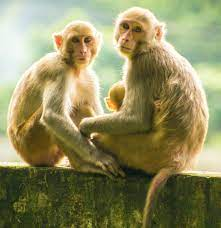
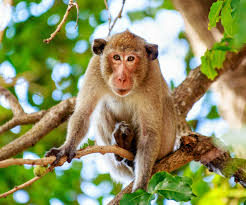

CATS

CATS FACTS
- Cats have 32 muscles in each ear.
- Cats have 4 rows of whiskers.
- Cats have no collarbone, which is one reason they are so flexible.
- Cats spend approximately 30% of their waking hours grooming themselves.
- American Shorthair” is the designation reserved for pedigreed cats, while similar-looking cats of mixed or unknown origin are called “domestic shorthairs.”
- Feline’s jaws cannot move sideways.
- Cats have over one hundred vocal sounds, while dogs have about ten!
- Cat whiskers are so sensitive they can detect the slightest change in air current.
- Cats have 26 baby teeth and 30 permanent teeth.
GO BACK
DOGS

DOGS FACTS
- Dalmatians are born without spots! They are born with plain white coats with their first spots appearing after they are 1week old.
- Dogs sweat through their foot pads to help keep them cool. They also keep cool by panting.
- Greyhounds are the world’s fastest dogs with the ability to reach up to 45 mph.
- Every dog has a unique nose print with no two alike.
- The Basenji, an African wolf dog, does not bark in a normal way but may yodel or scream when excited!
- Snoopy, from Charles M. Schultz’s “Peanuts” comic strip, is a beagle.
- A dog’s sense of smell is 1000 times greater than a human!
- Nine percent of dog owners will have a birthday party for their pet.
- Dogs have 28 baby teeth and 42 permanent teeth.
GO BACK
SNAKES

SNAKES FACTS
1. They have a very big family According to the latest count, there are 3,789 snake species,
making them the second largest group of reptiles after lizards.
They are divided into 30 different families and numerous subfamilies. Australia is home to approximately 140 of them.
2. They are “solar-powered” and rely fully on external heat or light sources
Reptiles sometimes get labelled ‘cold-blooded’
but this is incorrect as their blood isn’t actually cold.
The accurate term is ectothermicmeaning their body temperature is variable
and regulated by external sources.
Unlike mammals and birds that are able to internally regulate their body temperature,
reptiles need to use sources of heat,
like the sun, to warm up.A green snake coiling a leaf Photo by Alfonso Castro on Unsplash
3. Not all snakes lay eggs You might have learned in school that reptiles are different from mammals
because they lay eggs.
While we like to classify and categorize everything around us,
nature has its own rules.
While approximately 70% of snakes lay eggs, others don’t. Snakes living in especially colder climates
have live births because the eggs wouldn’t survive outside.
GO BACK
BALL PYTHON

1. Snakes don't have eyelids
Ever wondered why snakes might give you an eerie feeling? They don’t have eyelids!
This means they don’t
blink and have to sleep with their eyes wide open.
Instead of eyelids they have a
thin membrane attached to each eye to protect them.
The membrane is called the ‘brille,’ which in German means glasses.
2. They smell with their tongues
Snakes do have nostrils, but they don’t use them to smell.
Instead they have evolved to smell with their tongue and by using their Jacobson’s organ in the roof of their mouth.
Their smell is quite excellent and has also been described as “smelling in stereo”.
They have a forked tongue and multiple receptors able to pick up different amounts of chemical cues.
3. Their table manners are different than ours
When snakes are eating, they can’t help but to swallow their food whole because they can’t chew. Instead,
snakes have very flexible lower jaws which allows them to eat animals who are 75% - 100% larger than their own head.
The chemicals in their digestive track will do all the work and break down the food once ingested.
GO BACK
SNAKES HAVE 5 FORMS OF LOCATION

1. Imagine a snake moving through the grass. What do you picture? The well-known s-movement?
This wouldn’t be surprising,
because this is the most common form of locomotion in snakes, also known as lateral undulation. But snakes have four other
types of movement.
Arboreal snakes, for example, use a form of locomotion which uses seven times more energy,
called concertina.
There is even a special locomotion used for when a snake tries to escape on a smooth surface,
known as slide pushing.
GO BACK
TIGERS

1) India is home to 80 percent of tigers in the world.
In 2006, India estimated that there were 1,411 tigers
which increased to 1,706 in 2010, 2,226 in 2014 and 2,967 in 2018.
2) Tigers are good swimmers!
Unlike most members of the cat family, they like water and often cool off in pools or streams
3) Tigers are solitary hunters, and generally search for food alone at night.
They quietly stalk their prey
until they are close enough to pounce
then they kill their victim with a bite to the neck or back of the head. Ouch!
4) A tiger’s roar can be heard as far as three kilometres away.
SO when they want to be heard, you’ll know about it, gang!
5) At full speed, tigers can reach up to 65km/h.
That’s right – they may be big and heavy, but tigers are by no means slow movers!
 TIGER FACTS
TIGER FACTS
1) Tigers are the largest wild cats in the world. ...
2) Tigers are carnivores, eating only meat. ...
3) Tigers are solitary hunters, and generally search for food alone at night. ...
4) Tigers are good swimmers! ...
5) A tiger's roar can be heard as far as three kilometres away.
GO BACK
MOKEYS

- Features And Characteristics Of Monkeys
Here are some features and characteristics of monkeys:
- Monkeys can copy humans or other animals easily.
That’s why we have often seen monkeys imitating us or others.
- Monkeys are family animals, mostly living in herds or groups.
- Monkeys are intelligent animals that can read and recognise numbers.
- As per some studies and experiments conducted, monkeys even can-do sums or multiplications.
The IQ of monkeys is calculated to be around 174.

MONKEYS FACTS
- Monkeys are considered the ancestors of humans.
- Approximately 98% DNA of humans matches that of monkeys.
- Chimpanzees are considered to be the most sensitive monkey species.
- In Japan, monkey waiters are a common sight as they are easy to train as waiters.
- Every monkey, just like humans, has its distinct fingerprints.
- The only animal to peel a banana is a monkey.
- December 14 is celebrated as World Monkey Day annually.
GO BACK